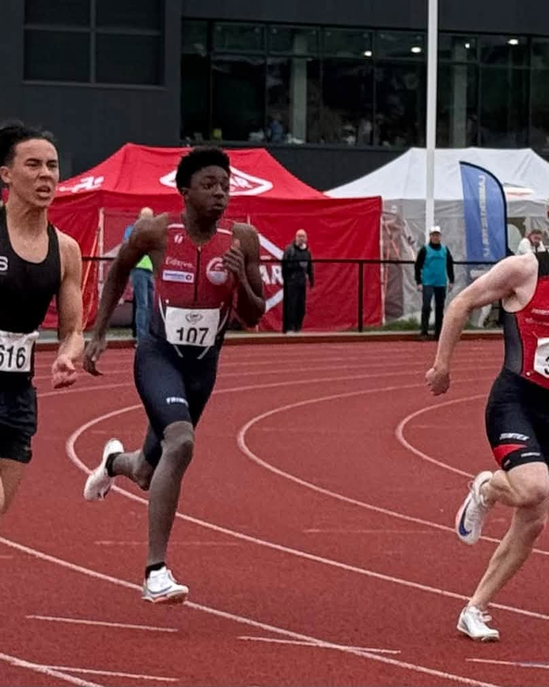
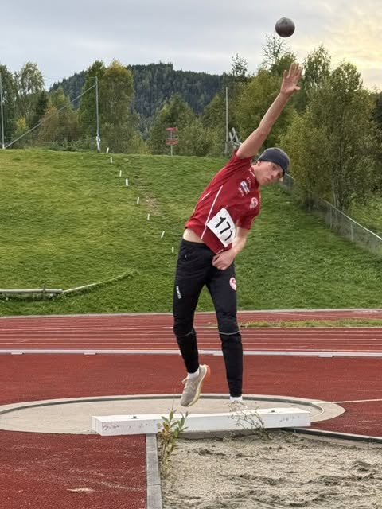

Øvelsene i friidrett
Friidrett er løp, hopp og kast. På trening får du prøve alt, og på stevner velger du selv hvilke øvelser du vil stille i.
Løp
- Sprint
- 60, 100, 200 og 400 meter. Hver løper har sin egen bane hele veien. De yngste starter stående, og etter hvert brukes startblokker.
- Mellomdistanse
- 600, 800 og 1500 meter. Her handler det om både fart og utholdenhet, og om å disponere kreftene riktig.
- Langdistanse
- 3000, 5000 og 10 000 meter på bane. Mange løper også gateløp, terrengløp og motbakkeløp.
- Hekk
- Sprint over hekker, fra 60 til 400 meter. Høyden på hekkene og avstanden mellom dem følger alderen.
- Hinder
- 1500, 2000 og 3000 meter med faste hindre og vanngrav. Øvelsen starter i 14-årsklassen.
- Stafett
- Fire løpere veksler med en stafettpinne. 4 × 100 og 4 × 400 meter er de vanligste, og for barn og ungdom finnes kortere varianter.
- Kappgang
- Én fot skal alltid være i bakken, og det fremste beinet skal være strakt fra det settes ned til det er rett under kroppen.

Hopp
- Høyde
- Du satser på ett bein og hopper over en list. Du har tre forsøk på hver høyde, og lista flyttes opp til alle har revet ut.
- Stav
- Som høyde, men med en stav som bøyer seg og løfter deg over lista.
- Lengde
- Tilløp, sats på ett bein og landing i sandgropa. De yngste satser fra en sone, de eldre fra en planke.
- Tresteg
- Tre hopp etter hverandre: hink, steg og hopp. De to første landes på banen, det siste i sandgropa.
- Hopp uten tilløp
- Lengde og høyde fra stående stilling, med sats på begge bein. Øvelsene er mye brukt innendørs om vinteren.

Kast
- Kule
- Kula støtes fra skulderen med én hånd, fra en ring. Den skal ikke kastes.
- Diskos
- Diskosen kastes med rotasjon fra en ring med sikkerhetsnett rundt.
- Slegge
- En kule i en ståltråd med håndtak. Utøveren roterer i ringen og slipper slegga ut gjennom åpningen i nettet.
- Spyd
- Spydet kastes etter et tilløp. Spissen skal treffe bakken først for at kastet skal telle.
- Liten ball og slengball
- Kastøvelser for de yngste. Liten ball veier 150 gram, slengballen 1 kilo.

Redskap etter alder
Redskapene blir tyngre etter hvert som utøverne blir eldre. Tabellen viser vektene som brukes i hver aldersklasse.
Vektene er hentet fra Tyrvingtabellen til Norges Friidrettsforbund. Seniorer kaster 7,26 kg kule og slegge, 2 kg diskos og 800 g spyd for menn, og 4 kg kule og slegge, 1 kg diskos og 600 g spyd for kvinner.
Mangekamp
I mangekamp konkurrerer du i flere øvelser, og resultatene regnes om til poeng. Seniorene har tikamp for menn og sjukamp for kvinner. For barn og ungdom finnes kortere varianter med tre til fem øvelser.